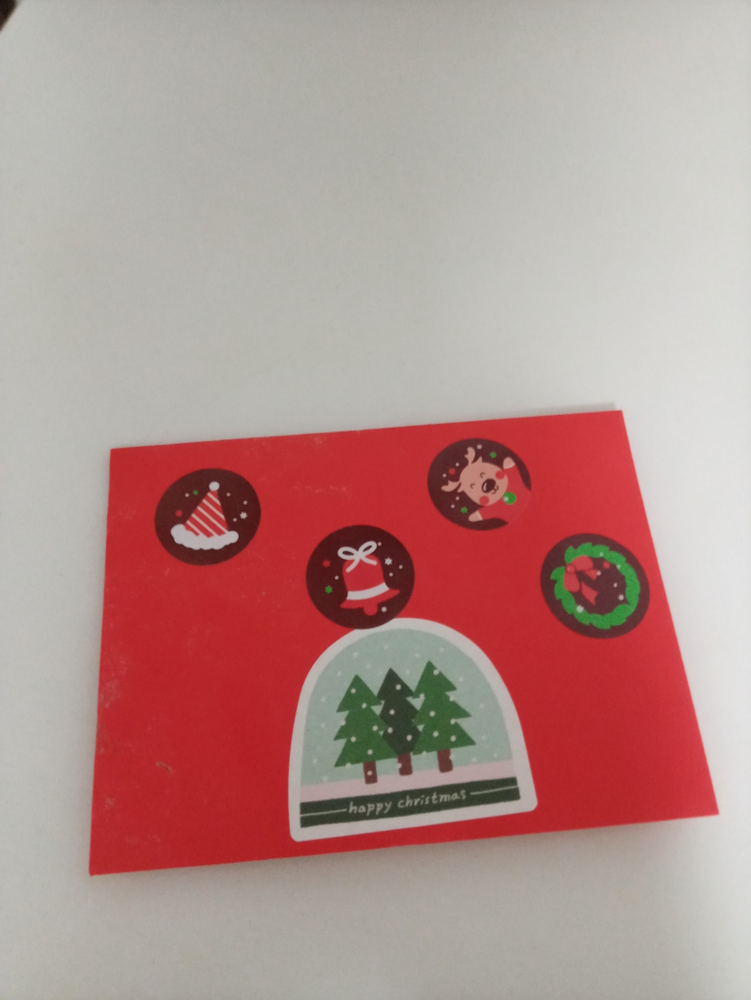
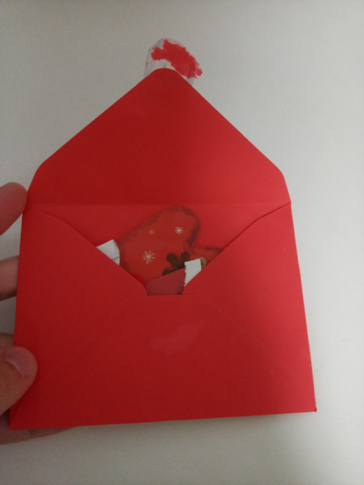
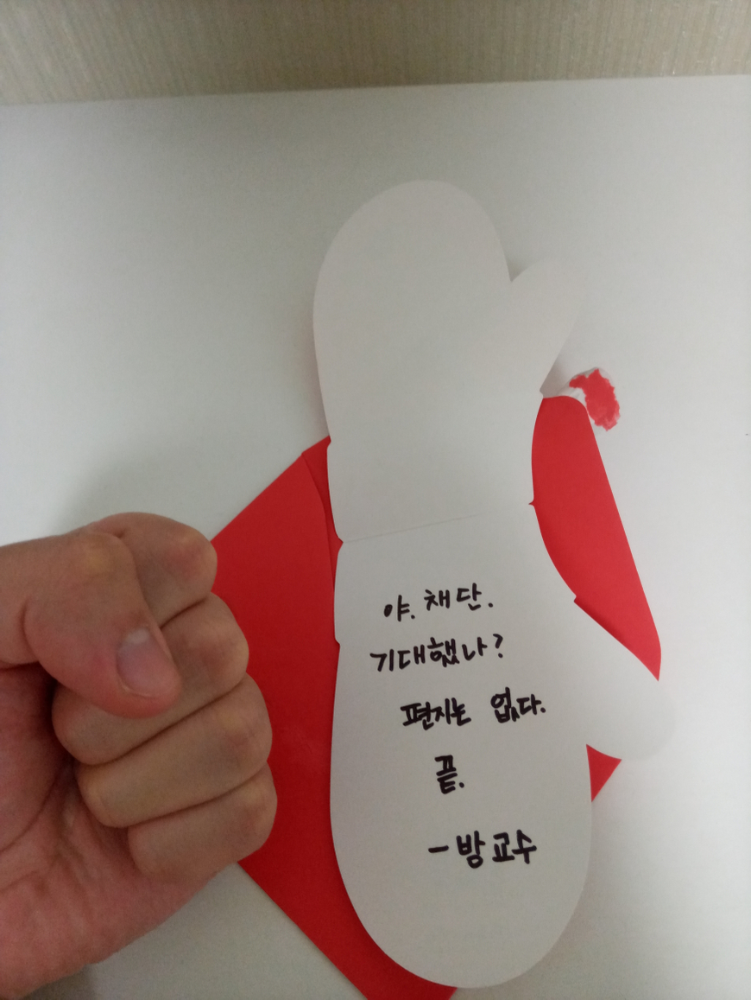
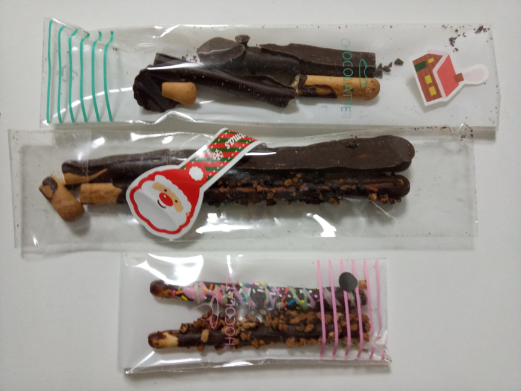
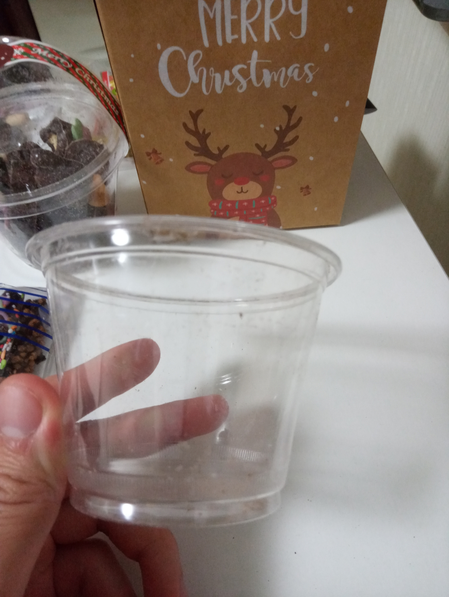
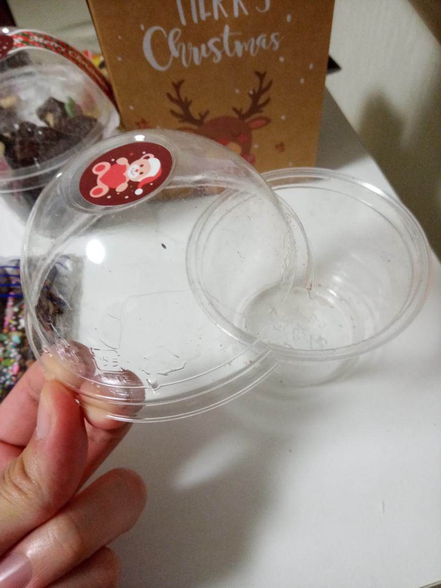
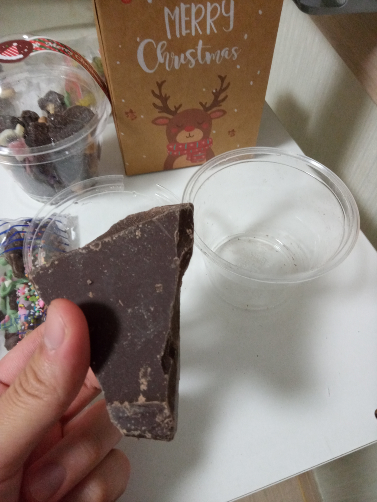
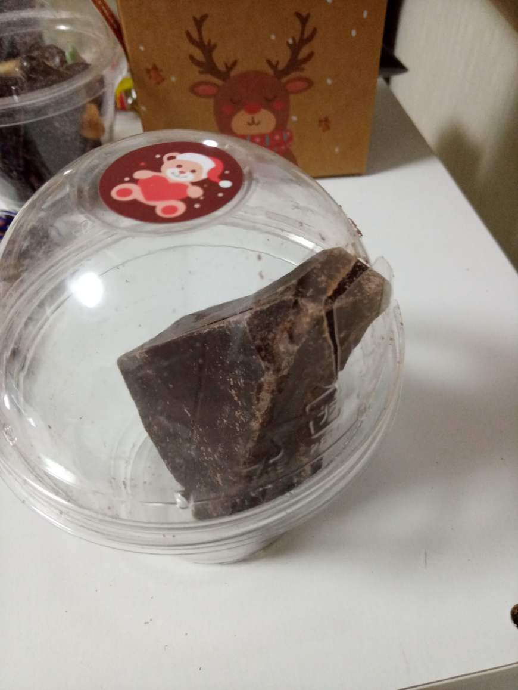
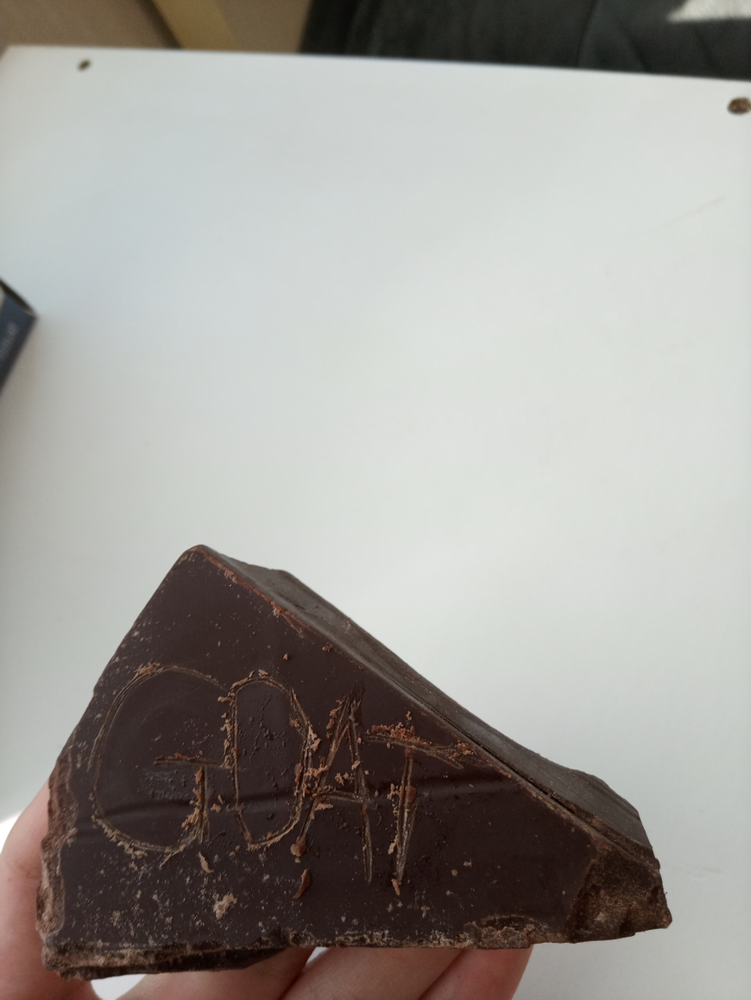
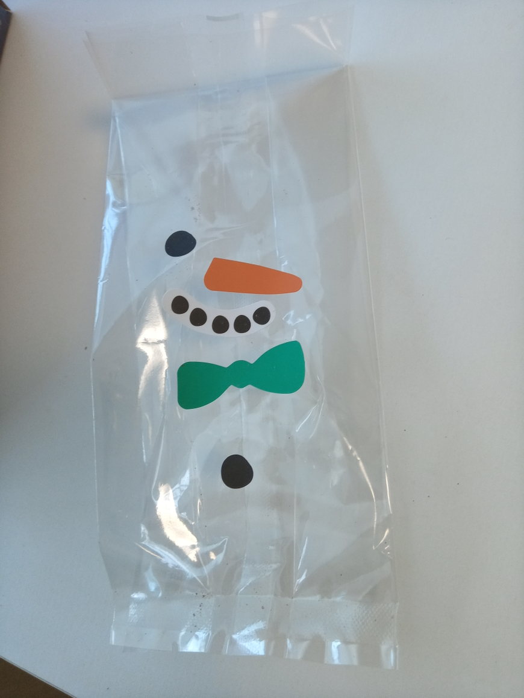

야채단님
야채단님 어제 받았지만 오늘 올리는 후기
퍄 깜짝편지

과연


Ya

언제든지 트수 목을 뎅강뎅강할 수 있다는 자신감이 옅보이는 빼빼로들.. ㅎㄷㄷ

?

뭔데

찾았다 사혼의 구슬 조각
이 귀여운 꼬마아이 꼴이 날 뻔했습니다

깨진 뚜껑을 통한 사건의 재구성.. 마치 새끼가 알 껍질을 뚫는 듯한 모습이다
사실 이 녀석 살아있는거 아냐?

다시 보니 케이크 모양 같아서 고트에디션으로 새겨줬읍니다

그리고 오늘 아침에야 발견한 섬뜩한 궁예 눈사람 ㄷㄷ
아무튼 행복한 새해 스타트를 안겨주셔서 감사합니다 GOAT

씨익
후원댓글 12개
댓글 12개 ▼